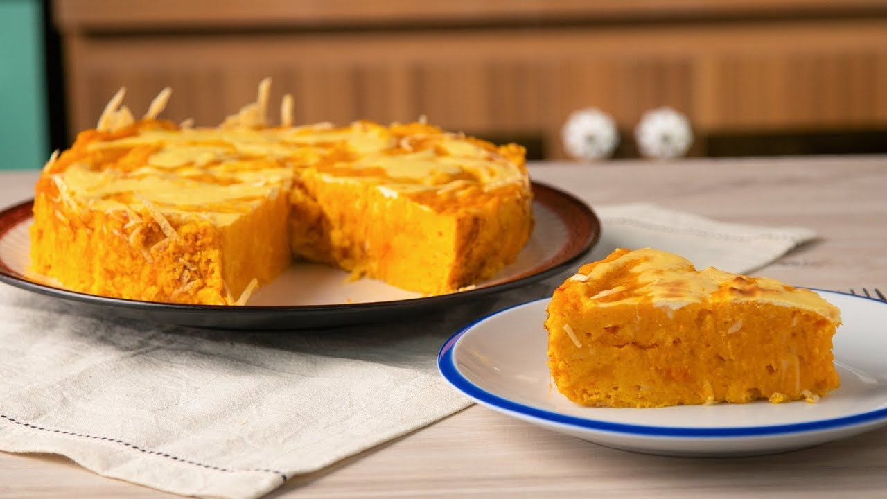

Recetas
Tarta soufflé Marmolada de Calabaza
Ingredientes
- 4 tazas de puré calabaza
- 5 huevos
- 1/2 taza de queso parmesano rallado
- 1/4 taza de harina
- 1 taza de queso crema
- Sal
- Pimienta
- Nuez moscada

Preparación
- Mezclar el puré de calabaza con 4 huevos, el queso parmesano, la harina, sal, pimienta y nuez moscada.
- Mezclar el queso crema con el huevo restante.
- Enmantecar un molde redondo y espolvorear con queso rallado. Rellenar con la mezcla de calabaza y la de queso crema. Dar el efecto marmolado con ayuda de un palillo.
- Hornear 30 minutos a 200°